Reflectieverslag, week 6
25/10/2021 - 29/10/2021Derde week ging het vrij goed. De volgende taken heb ik voltooid.
- debug inloggen button
- video package over grid bekijken
- video's over media queries en responsief maken bekijken
- design voor zoekresultaten en alle herdenkingsruimtes voorgesteld
- design voor beheer pagina's voorgesteld
- video's over units (Em & Rem - vh & vw) bekijken
- design voor Beheer pagina's voorgesteld
- design voor Profielpagina voorgesteld
- design voor Begrafenisondernemers voorgesteld
- design voor mijn herdenkingspagina's voorgesteld
- design voor herdenkingsruimtes v5.0 voorgesteld
- correctie van designs volgens feedback van mijn begeleiders
Maandag:
-
debug inloggen button
Bij onclick op inloggen knop ging het onzichtbaar worden en men kon de igelogde knop niet meer zien. Hiervoor heb ik aantal pogingen met bootstrap codes gedaan maar het lukte niet. Bij een onderzoek en kijken van aantal video's op Youtube ben ik tegen Auth0 gekomen; Het werken ermee is heel simple en mijn probleem is ook opgelost geworden. Nu wanneer de gebruiker op log in button klikt, gaat het met inglogde knop vervangen worden en zichtbar blijven.
Auth0 is een eenvoudig te implementeren, aanpasbaar authenticatie- en autorisatieplatform.
Kortom, ze maken onze inlogbox geweldig.
- Voor zoekbalk wou ik dat een extra optie voor alle gelijke namen hebben om die in een extra pagina te tonen. Ik probeerde deze extra optie in de bestaande codes toe te voegen maar ik krijg dubble hetzelfde resultaten. Ik zal later de zoek codes helemaal opnieuw schrijven.
Dinsdag:
Om een responsief website te hebben moest ik vanaf het begin i.p.v. flexbox met grid werken. (ik was 3 weken met homepage bezig allemaal door flexbox). Met grid duurt alles in max 4 dagen met alle correcties. Hiervoor moet ik aantal video packages bekijken.
- 1. Grid Layout duurt 2:19:59
- 2. Responsive Layout duurt 1:11:30
- 3. bootstrap 5 with grid (dit is een package van 12:08:39 maar ik heb 3 uur ervoor nodig, geloof ik)
- 4. Saas duurt 2:28:26
Woensdag:
-
Responsive Layout
Van deze package heb ik mediaqueries bekeken.
Mediaquery is een CSS-techniek die in CSS3 is geïntroduceerd. Het gebruikt de @mediaregel om een blok CSS-eigenschappen alleen op te nemen als een bepaalde voorwaarde waar is. Een voorbeeld ervan:
@media (max-width: 500px) { body { background-color: lightblue; } }Zo alle devices met een maximum breedte tot 500px hebben een lichtbluwe achtergrond. Dus alle andere devices kunnen normale design hebben.
-
design voor zoekresultaten en alle herdenkingsruimtes voorgesteld, ook responsief voor mobile
Design van zoekresultaten voorgesteld (deze pagina staat voor alle gelijke voornamen of achternamen).
design van alle herdenkingsruimtes heb ik hetzelfde voorgesteld (deze pagina staat voor alle overledene).
Vorige design:
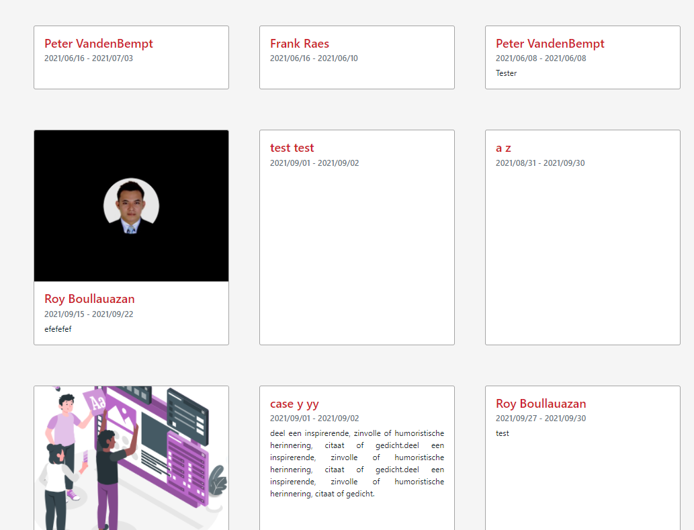Nieuwe design:
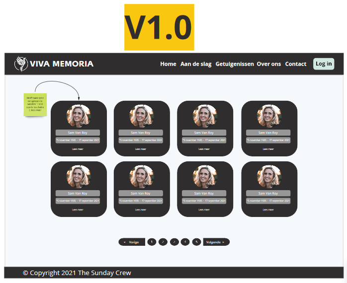
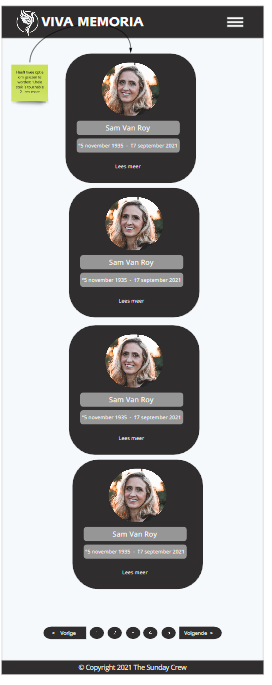
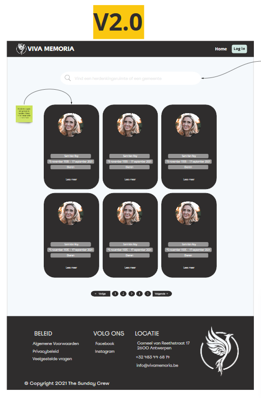
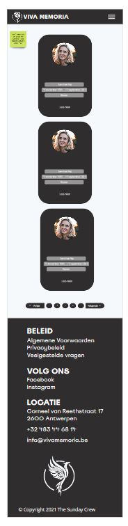
design voor Beheer pagina's voorgesteld, ook responsief voor mobile
Deze pagina heette vroeger mijn pagina's, ik heb het naar beheer pagina veranderd. In nieuwe design heb ik i.p.v. Browse herdenkingspagina's een nieuwe pagina als mijn favoriete herdenkingsruimtes voorgesteld.
Vorige design:

Nieuwe design:
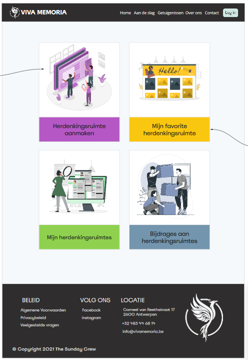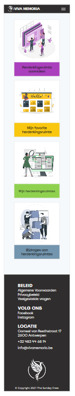
Donderdag:
-
video's over units (Em & Rem - vh & vw) opvolging van responsive video package bekijken
em: my parent element's font-size, Relative to the parent element.
Het ontvangt zijn maten van zijn ouders. Bv. als we een
<p>in een<div>hebben krijgt<p>zijn maten van<div>dat zijn parent is. Als<div>ook geen specifieke maten heeft krijgt<p>zijn maten van root element (<html>).<html><body><div><p></p></div></body></html>
div { font-size: 20px; padding: 2em; /* 2em = 40px */ }
%: hetzelfde als em
rem:The root element's font-size, Relative to the root element (
<html>)Het ontvangt zijn maten direct van root element.
bij default is 1rem = 16px.
De viewport is het zichtbare gedeelte van een webpagina voor de gebruiker. De viewport varieert met het apparaat en zal kleiner zijn op een mobiele telefoon dan op een computerscherm. Vóór tablets en mobiele telefoons waren webpagina's alleen ontworpen voor computerschermen en het was gebruikelijk dat webpagina's een statisch ontwerp en een vaste grootte hadden.
vh: Relative to the viewport’s height
vh = 1% of the viewport’s height (or 8px)
50 vh = 50% of the viewport’s height (or 400px)
vw: Relative to the viewport’s width
1 vw = 1% of the viewport’s width (or 4.8px)
50 vw = 50% of the viewport’s width (or 240px)
design voor Profielpagina voorgesteld, ook responsief voor mobile
Vorige design:
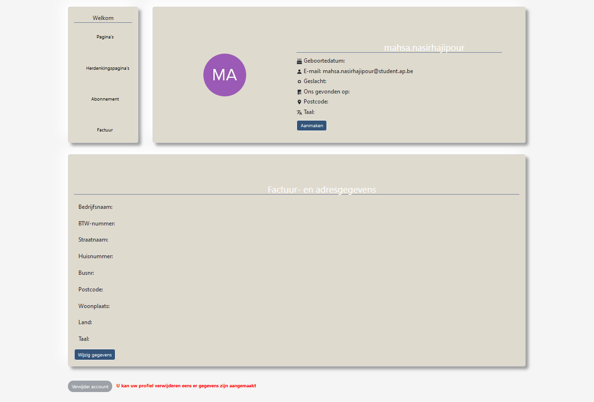Nieuwe design:


Vrijdag:
design voor Begrafenisondernemers voorgesteld, ook responsief voor mobile
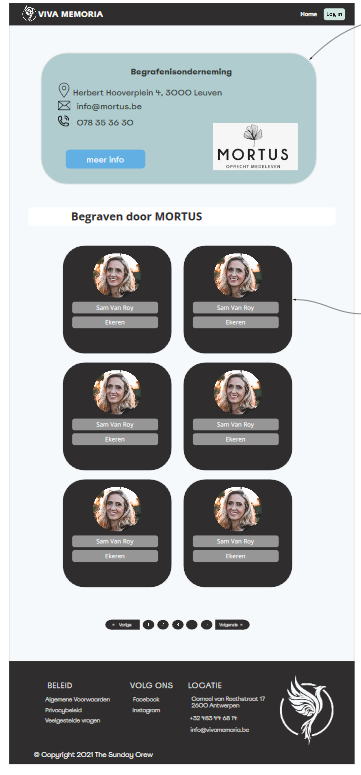
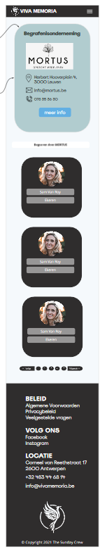
design voor mijn herdenkingspagina's voorgesteld, ook responsief voor mobile
design voor herdenkingsruimtes v5.0 voorgesteld
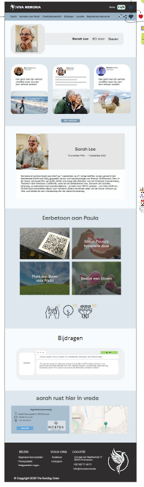
design voor navbar voorgesteld
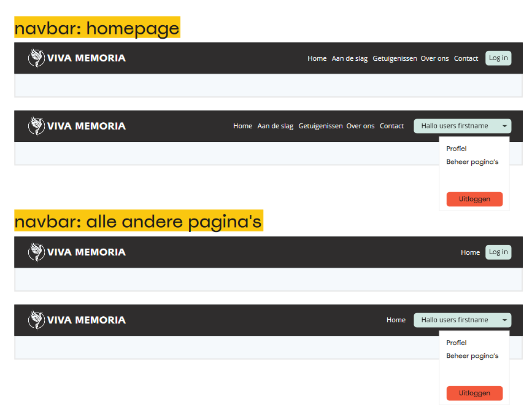
correctie van designs volgens feedback van mijn begeleiders
Vorige design:
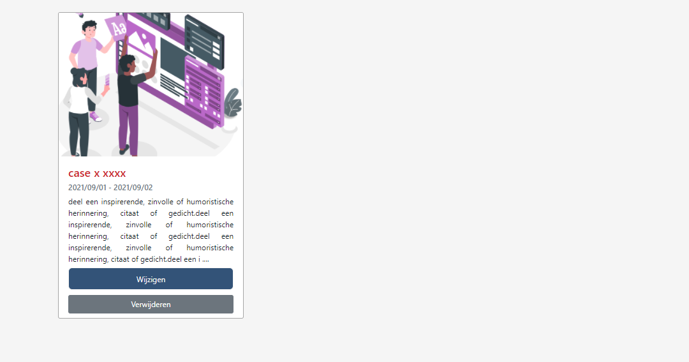Nieuwe design:
 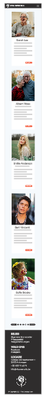
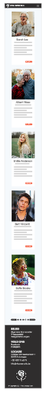